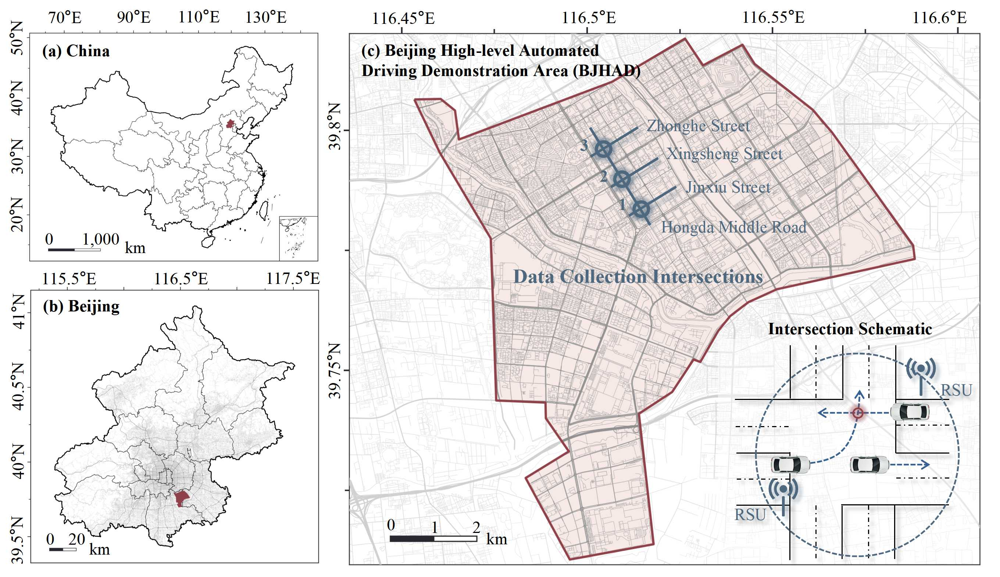
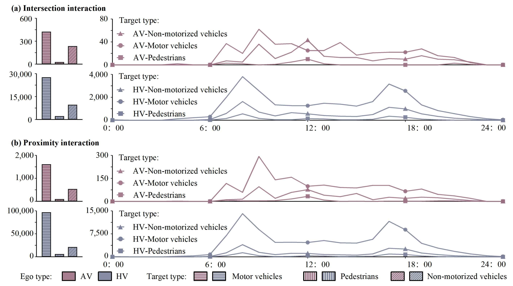
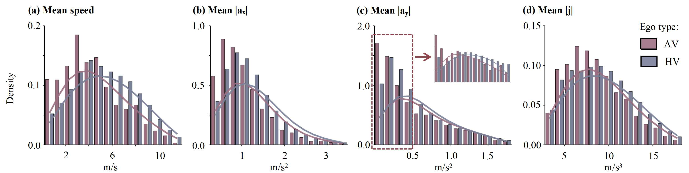
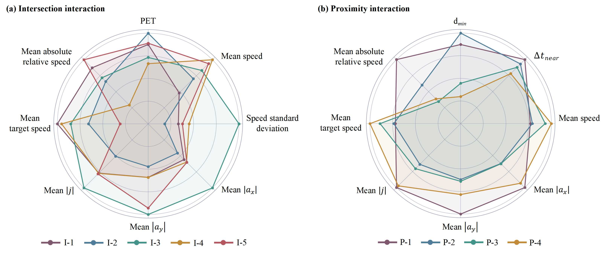
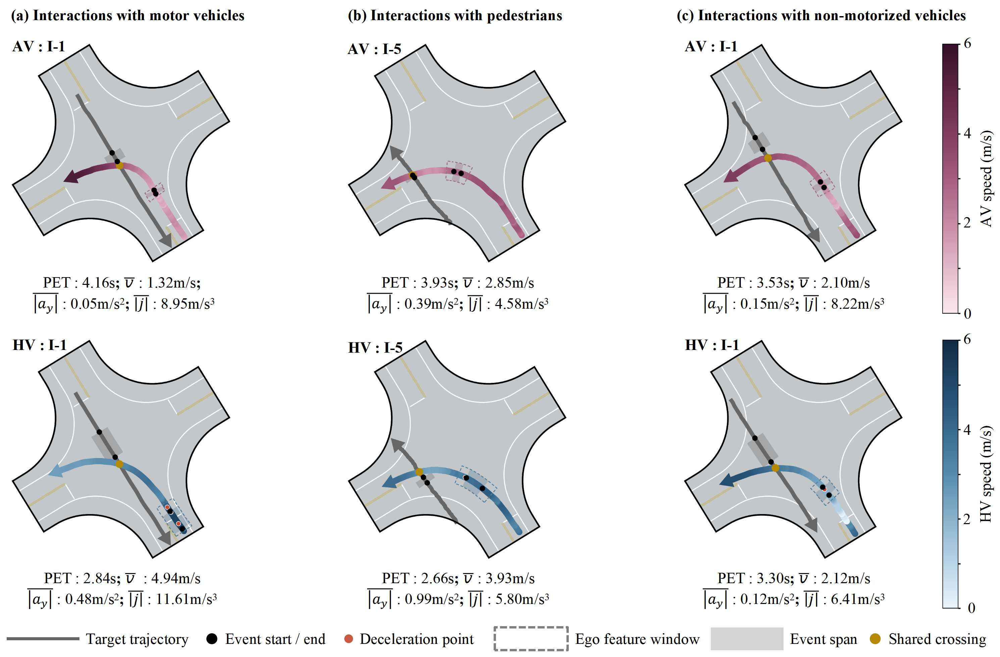

01 / DEFINITION & IDENTIFICATION
What is explicit interaction behavior?
Explicit interaction behavior (EIB) is defined by the co-occurrence of ego-vehicle motion-indicator deviations and local spatiotemporal proximity to a target road user.
Intersection interaction
The local trajectories share a crossing point, with a post-encroachment time (PET) below 5 s.
Proximity interaction
If no intersection interaction meets the PET criterion, the nearest trajectory-point pair is assessed: minimum distance ≤ 2 m and arrival-time gap < 5 s.
Both types are assessed following motion-deviation screening, within a local 5 s trajectory window.

Screen candidate points
Identify motion-indicator deviations and retain candidate points in 0.5 s bins.
Identify interactions
Search target road users and assess intersection interactions first, followed by proximity interactions.
Construct events
Merge detections by ego vehicle, target road user, and interaction type, using detection continuity and a midpoint check.
02 / EVENT SAMPLE
From roadside trajectories to event samples
24 h of roadside trajectories from three signalized intersections in the Beijing High-level Automated Driving Demonstration Area.
| Interaction type | Ego type | Motor vehicles | Pedestrians | Non-motorized vehicles | All events | Complete-feature events |
|---|---|---|---|---|---|---|
| Intersection | AV | 424 | 27 | 235 | 686 | 495 |
| Intersection | HV | 27,628 | 2,224 | 9,603 | 39,455 | 27,233 |
| Proximity | AV | 1,613 | 93 | 533 | 2,239 | 1,564 |
| Proximity | HV | 96,724 | 5,865 | 21,076 | 123,665 | 84,952 |
| Total | 126,389 | 8,209 | 31,447 | 166,045 | 114,244 | |
Target-type columns count all extracted events. The final column counts events with complete features, pooled across targets. All subsequent indicator comparisons and clustering use the complete-feature sample (68.80% of extracted events).
Study area


Target composition and hourly event distribution


03 / OVERALL AV–HV DIFFERENCES
Overall motion and proximity differences
Before dividing events into patterns, compare motion responses across the complete-feature sample and proximity indicators within each target road-user group.
AVs have lower pooled medians of mean speed, mean absolute longitudinal acceleration, lateral acceleration, and jerk.
Median PET is higher for AVs across all three target groups, although the distributions overlap.
AV median distances and time gaps are higher for motor-vehicle and pedestrian targets, but lower for non-motorized vehicles.


04 / BETWEEN PATTERNS
Pattern characteristics and AV–HV composition
Separate Gaussian mixture models identify five intersection interaction patterns (I-1 to I-5) and four proximity interaction patterns (P-1 to P-4).
How do the patterns differ?


Intersection patterns
I-4 combines the lowest median PET with the highest median mean speed. I-3 has the highest medians of speed variability and the three absolute motion-response indicators.
Proximity patterns
P-1 has the highest medians of the three absolute motion-response indicators. P-4 has the lowest median minimum distance and time gap, and the highest median mean speed.
How are AV and HV events distributed across patterns?
Pattern shares are compared within each target road-user type, using complete-feature events.
Differences are AV minus HV, in percentage points (pp), calculated from unrounded shares. Displayed percentages may differ by 0.01 pp under direct subtraction.
Full pattern-share figure

05 / WITHIN PATTERNS
AV–HV differences within the same pattern
Within each pattern, indicator distributions are compared between AVs and HVs after pooling the three target road-user types.

Intersection interactions
AVs have lower median deceleration ratios and mean absolute jerk in I-3 and I-5. Median PET is lower for AVs in I-3 (2.31 versus 2.48 s), but higher in I-5 (3.29 versus 3.00 s).
Proximity interactions
In P-1, AVs have a larger median minimum distance (0.80 versus 0.66 m), but a smaller median time gap (2.96 versus 3.15 s). Spatial and temporal differences can have opposite directions.
Illustrative trajectory cases
AV and HV intersection interaction cases are paired by target road-user type and interaction pattern.

